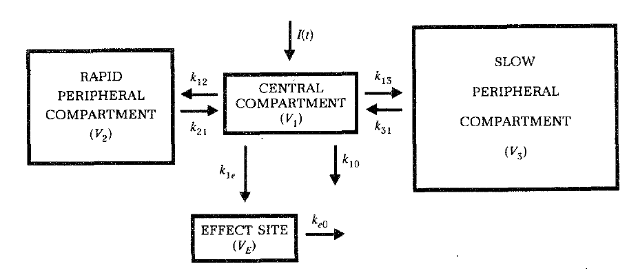
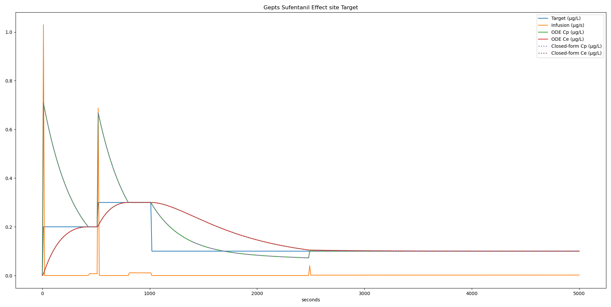
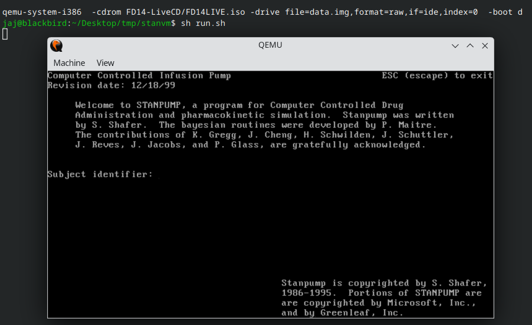
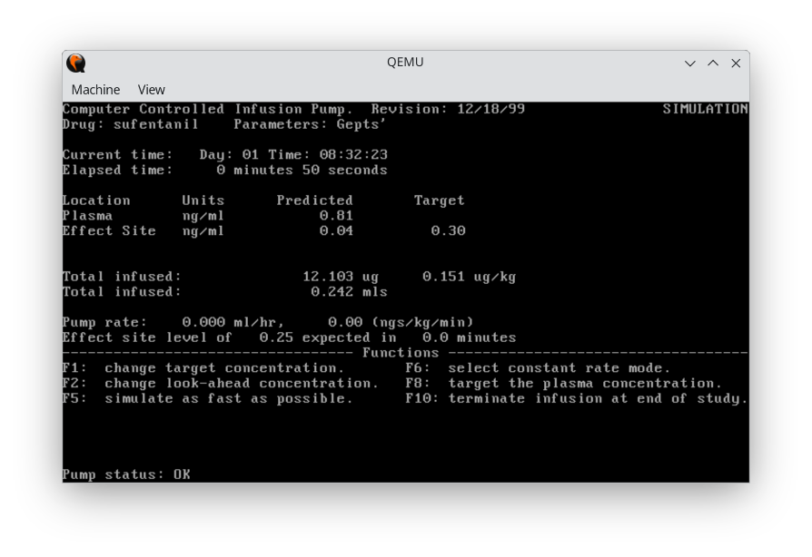

import numpy as np
A = [
[-(k10 + k12 + k13), k21, k31],
[k12, -k21, 0],
[k13, 0, -k31],
]
lambdas = np.linalg.eigvals(A)Pharmacometrics, TCI and STANPUMP
Target Controlled Infusion (TCI) is a technique that uses real-time algorithms to control drug infusions. The goal is to quickly and safely achieve the desired drug concentration in a patient’s blood or at the drug’s effect site, without overshooting the target. While TCI can be used beyond anesthesia, it has found its widest application in perioperative settings, where anesthesia-related drugs are infused to maintain stable sedation during total intravenous anesthesia (TIVA).
TCI relies on pharmacometric models called PKPD models (pharmacokinetic-pharmacodynamic models). These models describe how drugs move through and are processed by the body (pharmacokinetics) and how they affect the body (pharmacodynamics). Although the effect is typically sedation level, this isn’t always the case.
Since TCI’s first uses in the 1980s1, significant effort has been invested in developing new PKPD models. Today, these models are available for nearly every drug used in anesthesia. Extensive literature exists on PKPD models and their design, along with various software options for building and fitting these models. NONMEM is the best-known software, but many alternatives are available, including open-source options like nlmixr22 and more recently OpenPMX.
Most PKPD models for anesthesia are compartmental models with three compartments, where Cc typically represents the concentration of drug in the plasma. Additionally, Ce represents the concentration in the “effect compartment,” which drives the drug’s effect.
However, implementing new models to give clinical insight requires integrating them into TCI systems. Currently, few TCI systems are available, and most are proprietary and closed-source. The algorithms used for TCI, which must inverse PKPD models, are not well documented. The only open-source TCI system I’m aware of is STANPUMP from the 1990s. In this blog post, I’ll take a deep dive into the STANPUMP source code to understand the underlying algorithms and explore implementing them in a modern way. My aim is to understand these algorithms and create a minimal open-source implementation as a foundation for future work.
Mathematics
PKPD models can be described by a set of ordinary differential equations (ODE) with one equation per compartment. In anesthesia, most drugs follow a 3-compartment model with can be mathematically described as follows:

\[ \begin{equation} \begin{aligned} \frac{dA_1}{dt} & = A_2 k_{21} + A_3 k_{31} - A_1(k_{10} + k_{12} + k_{13}) + \text{Infusion} \\ \frac{dA_2}{dt} & = A_1 k_{12} - A_2 k_{21} \\ \frac{dA_3}{dt} & = A_1 k_{13} - A_3 k_{31} \\ \frac{dC_e}{dt} & = k_{e0}\left(\frac{A_1}{V_c} - C_e\right) \end{aligned} \end{equation} \tag{1}\]
\(A_n\) is the amount of drug in compartment \(n\), \(k_{ij}\) is the rate constant which describes the speed with which the drug moves from compartement \(i\) to compartment \(j\). This is not Fick’s laws of diffusion because diffusion is driven by concentration, not by drug amount. It took me some time to understand that we are talking about the drug amount, not the concentration. This was difficult to understand especially since there is an exception for the effect site compartment \(Ce\) where the rate constant \(k_{e0}\) drives directly concentration. Once, the effect site compartment was treated as a regular compartment (with \(k_{14}\) and \(k_{41}\) rate constants). However, nowadays it is treated as a special compartment with zero volume and a single rate constant \(k_{e0}\) (= \(k_{41}\)) and \(k_{14}\) is zero. Since the volume is zero, no drug actually moves to the compartment and it is driven by concentration. The plasma concentration \(Cc\) is obtained by dividing the amount in the central compartment \(A_1\) by \(Vc\), the volume of the central compartment.
If we leave aside the infusion term for one moment, we can write the equations in matrix form as
\(\frac{dA}{dt} = S \cdot A^T\)
Where \(A\) is the vector \(\begin{pmatrix} A_1 & A_2 & A_3 \end{pmatrix}\) and S is the system matrix.
\[ \mathbf{S} = \begin{pmatrix} -(k_{10} + k_{12} + k_{13}) & k_{21} & k_{31} \\ k_{12} & -k_{21} & 0 \\ k_{13} & 0 & -k_{31} \end{pmatrix} \]
This expression can be integrated to obtain the following closed form expression:
\[ Cc(t) = B_1 e^{-\lambda_1 t} + B_2 e^{-\lambda_2 t} + B_3 e^{-\lambda_3 t} \tag{2}\]
In this closed form solution, the \(B\) terms are called hybrid rate constants and the \(\lambda\) terms are called exponential decay constants. You will also find it written as:
\[ Cc(t) = A e^{-\alpha t} + B e^{-\beta t} + C e^{-\gamma t} \]
To obtain this expression, we need to calculate the exponential decay constants \(\lambda\), which are the eigenvalues of the system.
However, this equation does not account for infusion, it describes the clearance from plasma starting from an initial value \(B\).
If we want to solve the ODE system while taking into account the infusion term \(J\), the equation becomes more complicated3,4. This equation introduces coefficients \(c_{ji}\) which are outlined below.
\(Cc = \sum_{n} B_n e^{-\lambda_n dt} + c_{pn} J (1 - e^{-\lambda_n dt})\)
The equation can also be written for the effect site concentration:
\(Ce = \sum_{n} B_n e^{-\lambda_n dt} + c_{en} J (1 - e^{-\lambda_n dt})\)
In this case, the vector B contains a fourth term for the effect compartment, \(k_{e0}\) is added as a fourth term to \(\lambda\) and different coefficients \(c_e\) are used.
These formulas are valid for constant infusion rate \(J\). If the infusion rate is changed, the solution can be calculated up to the last value during the previous infusion rate and this solution can be used as an initial state \(B\) in the new formula with new rate constant.
Pharmacokinetic Coefficient
This is the most frustrating part for me. I copied these coefficients from STANPUMP, but I don’t understand how to derive them mathematically. According to the literature, the derivation involves several complex steps: applying the Laplace transform3 to Equation 1, performing calculations in the Laplace domain, simplifying the expression using partial fraction decomposition, and then applying the inverse Laplace transform. Unfortunately, this level of mathematics is beyond my current understanding. I would be grateful if someone could explain how these coefficients are actually derived.
Three Compartment Model
\[ \begin{equation} \begin{aligned} c_{p1} & = \frac{(k_{21} - \lambda_1)(k_{31} - \lambda_1)}{(\lambda_1 - \lambda_2)(\lambda_1 - \lambda_3) \cdot V_c \cdot \lambda_1} \\ c_{p2} & = \frac{(k_{21} - \lambda_2)(k_{31} - \lambda_2)}{(\lambda_2 - \lambda_1)(\lambda_2 - \lambda_3) \cdot V_c \cdot \lambda_2} \\ c_{p3} & = \frac{(k_{21} - \lambda_3)(k_{31} - \lambda_3)}{(\lambda_3 - \lambda_2)(\lambda_3 - \lambda_1) \cdot V_c \cdot \lambda_3} \\ c_{e1} & = c_{p1} \cdot \frac{k_{e0}}{k_{e0} - \lambda_1} \\ c_{e2} & = c_{p2} \cdot \frac{k_{e0}}{k_{e0} - \lambda_2} \\ c_{e3} & = c_{p3} \cdot \frac{k_{e0}}{k_{e0} - \lambda_3} \\ c_{e4} & = \frac{(k_{e0} - k_{21})(k_{e0} - k_{31})}{(\lambda_1 - k_{e0})(\lambda_2 - k_{e0})(\lambda_3 - k_{e0}) \cdot V_c} \end{aligned} \end{equation} \]
Two Compartment Model
\[ \begin{equation} \begin{aligned} c_{p1} & = \frac{k_{21} - \lambda_1}{(\lambda_2 - \lambda_1) \cdot V_c \cdot \lambda_1} \\ c_{p2} & = \frac{k_{21} - \lambda_2}{(\lambda_1 - \lambda_2) \cdot V_c \cdot \lambda_2} \\ c_{e1} & = c_{p1} \cdot \frac{k_{e0}}{k_{e0} - \lambda_1} \\ c_{e2} & = c_{p2} \cdot \frac{k_{e0}}{k_{e0} - \lambda_2} \\ c_{e3} & = \frac{k_{21} - k_{e0}}{(\lambda_1 - k_{e0})(\lambda_2 - k_{e0}) \cdot V_c} \end{aligned} \end{equation} \]
One Compartment Model
\[ \begin{equation} \begin{aligned} c_{p1} & = \frac{1}{\lambda_1 \cdot V_c} \\ c_{p2} & = c_{p1} \cdot \frac{k_{e0}}{k_{e0} - \lambda_1} \\ c_{e1} & = \frac{1}{(\lambda_1 - k_{e0}) \cdot V_c} \end{aligned} \end{equation} \]
Source code
Steven L. Shafer, one of the pioneers of TCI, wrote the original STANPUMP source code. From the beginning, Shafer intended for this software to be open source—a valuable contribution to the community. Later, Charles Minto established the Open TCI website, which serves as a repository for models and software related to PKPD and TCI. The latest version of STANPUMP is available at: https://opentci.org/code/stanpump.
16-bit real mode MSDOS
STANPUMP was written for the MSDOS operating system, running on x86 systems in “real mode”. In real mode, program address physical memory directly with a maximum of 1 MB adressable memory. There is no memory protection and any memory location can be read and written by any program. The program interacts directly with the hardware through interrupts. This can for example be seen in the STANPUMP code which interacts with the keyboard or renders text on the screen.
#define INT09 0x0009 /* Keyboard interrupt number */
#define INT1B 0x001B /* Ctrl-C interrupt number */
#define INT23 0x0023 /* Ctrl-Break interrupt number */
void set_keyboard()
{
OldInt09 = _dos_getvect( INT09 );
OldInt1B = _dos_getvect( INT1B );
OldInt23 = _dos_getvect( INT23 );
KbdPtr = Int09;
_dos_setvect( INT09, KbdPtr );
BrkPtr = Int1B;
_dos_setvect( INT1B, BrkPtr);
BrkPtr = Int23;
_dos_setvect( INT23, BrkPtr );
KbdCtrl = (ADDRESS) KBDFLAG;
keyboard_reset = 1;
}
void gotoxy(x, y)
int x, y;
{ /* gotoxy */
REGS ir, or;
ir.h.dh = y;
ir.h.dl = x;
ir.h.ah = 2;
ir.h.bh = 0;
int86(0x10, &ir, &or);
} /* gotoxy */K&R vs. ANSI C
STANPUMP was written in the now obsolete K&R style which was published in 1978 by Brian Kernighan and Dennis Ritchie.
This is mostly visible in the function prototypes, for example:
void cube(k10,k12,k21,k13,k31,r)
double k10, k12, k21, k13, k31;
double *r;
{ /* cube */
/* function code */
} /* cube */This is the modern ANSI C equivalent of this prototype:
void cube(double k10, double k12, double k21, double k13, double k31, double *r);Memory allocations
STANPUMP was designed to run on systems with severe memory constraints. The developers avoided heap allocation because it was unreliable on MS-DOS systems. Instead, they statically allocated all variables and shared program state through global variables. While global variables are discouraged in modern programming because they make it difficult to track program state and predict how functions interact, this approach was practical given the hardware limitations of the time. Despite these constraints, STANPUMP’s developers made several clever design choices to minimize memory and CPU usage. Their deep understanding of the underlying algorithms allowed them to precalculate certain values for later reuse, demonstrating sophisticated optimization techniques. One notable example is their introduction of “unit disposition functions” (UDFs).
/* calculate udf, plasma concentration, for an infusion of 1/second */
p_udf[0] = 0;
for (i = 1; i < 199; i++)
{
temp1 = temp1 * l1 + p_coef[1] * (1 - l1);
temp2 = temp2 * l2 + p_coef[2] * (1 - l2);
temp3 = temp3 * l3 + p_coef[3] * (1 - l3);
p_udf[i] = temp1 + temp2 + temp3;
}UDFs represent the step response of the model and are calculated for both plasma concentration and effect site concentration. They show how the model responds to a constant infusion of 1 unit of drug per second. This calculation is performed once and stored in memory, then the response vector can be scaled according to the actual infusion rate.
Calculation of Eigenvalues
STANPUMP uses closed-form solutions of the PKPD differential equations to improve calculation efficiency. These solutions have been derived and published by the authors and others3,4. To obtain these equations, the eigenvalues of the PKPD model must be calculated. In the early 1990s, mathematics libraries for eigenvalue calculations were not widely available, so the developers had to implement this manually. This calculation is handled in the CUBE.C source file. The process begins by calculating the determinant of the system matrix and expressing it as a depressed cubic equation: x³ + px + q = 0. Since off-the-shelf cubic equation solvers weren’t available in C during the 1990s, the authors implemented Girolamo Cardano’s 16th-century trigonometric solution to solve this equation and derive the eigenvalues. This approach was practical because trigonometric functions had been part of the C standard library since 1978 and were extended in 1989.
void cube(k10,k12,k21,k13,k31,r)
double k10, k12, k21, k13, k31;
double *r;
{ /* cube */
double a0, a1, a2; /* factors in cubic equation */
double p, q; /* factors in transformed equation */
double phi; /* used for root solving */
double r1; /* also used for root solving */
double toradian; /* mathematical conversion from degrees to radians */
toradian = asin(1.0) * 2.0 / 180.0; /* pi/180 */
if (k31 > 0)
{
/* first take roots of X^3 + a2X^2 + a1X^1 + a0 = 0 */
/* where the coefficients are : */
a0 = k10 * k21 * k31;
a1 = k10 * k31 + k21 * k31 + k21 * k13 + k10 * k21 + k31 * k12;
a2 = k10 + k12 + k13 + k21 + k31;
/* now transform to x^3 + px + q = 0 */
p = a1 - (a2 * a2 / 3.0);
q = (2 * a2 * a2 * a2 / 27.0) - (a1 * a2 / 3.0) + a0;
r1 = sqrt(-(p * p * p) / 27.0);
phi = (-q / 2.0) / r1;
if (phi > 1)
phi = 1;
else if (phi < -1)
phi = -1;
phi = (acos(phi) / 3.0);
r1 = 2.0 * exp(log(r1) / 3.0);
r[1] = -(cos(phi) * r1 - a2 / 3.0);
r[2] = -(cos(phi + 120.0 * toradian) * r1 - a2 / 3.0);
r[3] = -(cos(phi + 240.0 * toradian) * r1 - a2 / 3.0);
}
else
{
if (k21 > 0)
{
/* first take roots of X^2 - a1X^1 + a0 = 0 */
/* where the coefficients are : */
a0 = k10 * k21;
a1 = -(k10 + k12 + k21);
r[1] = (-a1 + sqrt(a1 * a1 - 4 * a0)) / 2;
r[2] = (-a1 - sqrt(a1 * a1 - 4 * a0)) / 2;
r[3] = 0;
}
else
{
/* one compartment model */
r[1] = k10;
r[2] = 0;
r[3] = 0;
}
}
/* sort - nothing fancy is needed */
if (r[2] > r[1])
swap(&r[2], &r[1]);
if (r[3] > r[1])
swap(&r[3], &r[1]);
if (r[3] > r[2])
swap(&r[3], &r[2]);
} /* cube */Core algorithm
To study the algorithm, I extracted the core functions, converted them to ANSI C, and created a minimal C program to run the algorithm. The source code for this project is available at: https://framagit.org/jaj/ministan/-/tree/main/c.
I considered it essential to run the original STANPUMP code as a reference implementation. When algorithms are re-implemented, small errors can easily creep in and may be difficult to detect. Using the original STANPUMP as a control allows us to verify that our code produces correct output. In my adaptation, I moved all global variables into a struct called Config to serve as a centralized state container.
/* cube.c */
void cube(double k10, double k12, double k21, double k13, double k31,
double *r);
/* udfs.c */
void calculate_udfs(Config *cfg);
/* virtual_model.c */
double virtual_model(Config *cfg, double vm1, double vm2, double vm3,
double vm4, int t, int flag);
/* find_peak.c */
int find_peak(Config *cfg, int current_time, double rate, double temp1e,
double temp2e, double temp3e, double temp4e);
/* model.c */
double model(Config *cfg, double temp1, double temp2, double temp3,
double temp1e, double temp2e, double temp3e, double temp4e,
double desired);The cube() function was already discussed above. It calculates eigenvalues of the PK system which are widely used later in the code.
The calculate_udfs() function calculates the “unit disposition functions” (UDF). A ten second infusion is simulated at constant (unit) rate. Then the model is run until the model is run without infusion to see when the concentration peaks (peak_time). The peak_time (also called time to peak effect TTPE) is a caracteristic of the model. It is used later in the model() function. The calculate_udfs() function also calculates the \(c_p\) and \(c_e\) coefficients.
The virtual_model() function runs the model without infusion rate for a specified time. This is useful to estimate where the concentrations are heading and to evaluate how rate needs to be adjusted.
find_peak() is a hill climbing algorithm to find out when concentration will peak given the current infusion rate.
The model() function is the main function of the algorithm. It orchestrates the other functions to find the optimal infusion rate for the given target.
Reimplementation in Python
STANPUMP represents a remarkable combination of deep TCI algorithm knowledge and programming expertise. The authors derived mathematical solutions themselves to optimize performance and employed coding techniques that enabled real-time execution on very basic hardware. With over 10 years of clinical use, the software’s algorithms are thoroughly proven in practice. To experiment with the code and test it with my own models, I decided to reimplement it in Python. I began with a 1:1 translation of the C code, then gradually modernized sections using contemporary approaches like array programming with NumPy5.
For example, the calculation of the eigenvalues is straightforward with NumPy:
Some algorithms could probably be replaced by highly optimized functions from the SciPy library6, such as the local maximum algorithms. There is still work to be done in this space.
The current version of the code can be found here: https://framagit.org/jaj/ministan/-/blob/main/python/tci.py
Here is an example code of a simulation of the Gepts Sufentanil model7:
https://framagit.org/jaj/ministan/-/blob/main/python/sim_gepts.py
The code calculates infusion rates for three different effect site targets and determines the resulting plasma and effect site concentrations for each rate. To validate these results, the code also solves the differential equations directly, providing an independent calculation method alongside the closed-form solutions.

The code could be coupled to a syringe pump control library such as InfuPy8 to drive syringe pumps with the calculated rates. Of course this can only be used for research purposes and under no circumstances on real patients. See https://www.demed.be/Rugloop%20&%20TCI%20news.htm#Background for more information on this topic.
Emulation
STANPUMP can still be run today on modern hardware using FreeDOS, an open source reimplementation of MS-DOS. I have briefly tested that the STANPUMP binary obtained from OpenTCI runs with FreeDOS in the Qemu emulator. Running the real STANPUMP program in emulation and comparing the calculated infusion rates can provide an additional layer of validation of the algorithms.

Here is an example screen with the Gepts model running:

References
1.
Struys MMRF, De Smet T, Glen J(Iain)B, Vereecke HEM, Absalom AR, Schnider TW. The History of Target-Controlled Infusion. Anesthesia & Analgesia [Internet] 2016 [cited 2025 Aug 19]; 122: 56–69 Available from: https://journals.lww.com/00000539-201601000-00015
2.
Fidler M, Wilkins J, Hooijmaijers R, et al. Nonlinear mixed-effects model development and simulation using nlmixr and related r open-source packages. CPT: Pharmacometrics & Systems Pharmacology [Internet] Hoboken: John Wiley; Sons Inc.; 2019; 8: 621–33 Available from: https://doi.org/10.1002/psp4.12445
3.
Shafer SL, Gregg KM. Algorithms to rapidly achieve and maintain stable drug concentrations at the site of drug effect with a computer-controlled infusion pump. Journal of Pharmacokinetics and Biopharmaceutics [Internet] 1992 [cited 2025 Aug 19]; 20: 147–69 Available from: http://link.springer.com/10.1007/BF01070999
4.
Bailey JM, Shafer SL. A simple analytical solution to the three-compartment pharmacokinetic model suitable for computer-controlled infusion pumps. IEEE transactions on bio-medical engineering 1991; 38: 522–5
5.
Harris CR, Millman KJ, Walt SJ van der, et al. Array programming with NumPy. Nature [Internet] Springer Science; Business Media LLC; 2020; 585: 357–62 Available from: https://doi.org/10.1038/s41586-020-2649-2
6.
Virtanen P, Gommers R, Oliphant TE, et al. SciPy 1.0: Fundamental Algorithms for Scientific Computing in Python. Nature Methods 2020; 17: 261–72
7.
Gepts E, Shafer SL, Camu F, et al. Linearity of Pharmacokinetics and Model Estimation of Sufentanil. Anesthesiology [Internet] 1995 [cited 2025 Aug 23]; 83: 1194–204 Available from: https://journals.lww.com/00000542-199512000-00010
8.
Joachim J. InfuPy [Internet]. Zenodo; 2021 [cited 2021 Aug 16]. Available from: https://zenodo.org/record/5208192
Citation
BibTeX citation:
@online{joachim2025,
author = {Joachim, Jona},
title = {Deep Dive into {STANPUMP}},
date = {2025-08-24},
url = {https://jaj42.github.io/blog/posts/202508_stanpump/},
langid = {en}
}
For attribution, please cite this work as:
Joachim J. Deep dive into STANPUMP [Internet].
2025. Available from: https://jaj42.github.io/blog/posts/202508_stanpump/